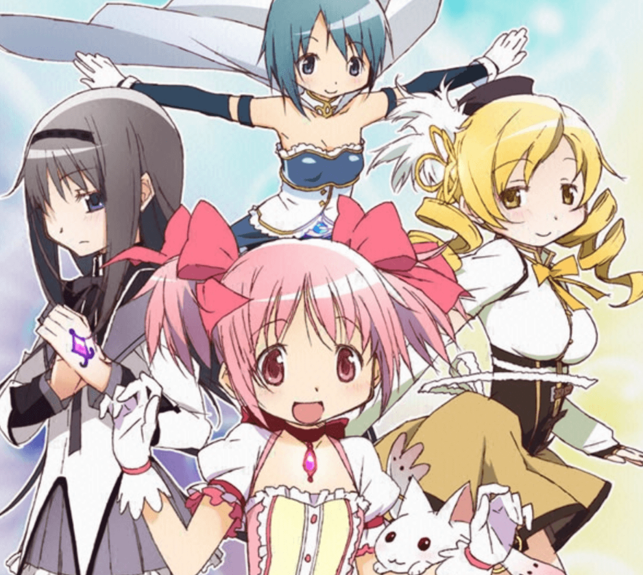

好きな作品
魔法少女まどか☆マギカ
あらすじ：物語は鹿目まどかが見る夢から始まります。
巨大な怪物に破壊された市街地で傷つきながら戦う少女暁美ほむらを目撃し、白い動物のような生き物キュウベエから「僕と契約して、魔法少女になってよ」と告げられる夢です。
夢の中で見た少女・ほむらは、現実にまどかと同じクラスの転校生として現れ、ほむらはまどかに「魔法少女になってはならない」と警告します。
その後キュウベエにも会うことになり、「魔法少女になれば魔女と戦う代わりに願いをひとつだけ叶えてくれる」と言います。
そして第1話後半ではまどかと友人の美樹さやかが魔女の結界に迷い込み、2人はそこで魔法少女の巴マミと出会います――。
おすすめです。興味ある方はぜひ。
 出典：こちら